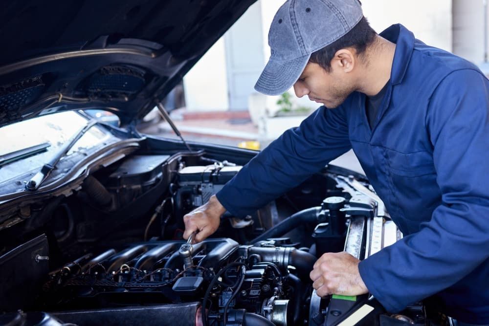

Gandoz Mobil hadir untuk memberikan pengalaman servis kendaraan yang lebih nyaman, transparan, dan terpercaya. Didukung teknisi berpengalaman serta teknologi modern, kami berkomitmen memberikan perawatan dan perbaikan berkualitas agar kendaraan Anda selalu dalam kondisi terbaik.
Bersertifikasi dan berpengalaman
Estimasi biaya di awal
Suku cadang original
Tepat waktu sesuai jadwal
Jaminan pengerjaan hingga 30 hari